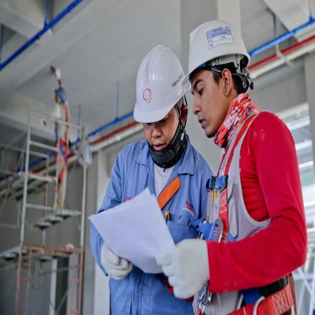
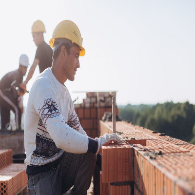

A manutenção preventiva é essencial para estender a vida útil de uma edificação. E não apenas trata-se de manter o funcionamento das instalações, como também de certificar a segurança de todos os indivíduos que transitam nesses espaços.
O que é manutenção preventiva?
De acordo com a Norma ABNT – NBR 5462/94 , é uma manutenção que ocorre ou em intervalos predeterminados ou ao atingir um limite de produção ou uso, por exemplo.
Ao realizar uma manutenção antes do desgaste, você consegue economizar com gastos futuros, seja de uma manutenção corretiva, que você vai conhecer logo mais, ou até mesmo com a substituição de alguma estrutura.
Quer saber mais?
Manutenção preventiva predial: 5 passos para manter sua edificação em bom funcionamento
Manutenção predial.
A manutenção preventiva predial é um conjunto de atividades que tem como objetivo prevenir a ocorrência de falhas e garantir o bom funcionamento dos ambientes, equipamentos e sistemas presentes na edificação. Além disso, ela também ajuda a prolongar a vida útil dos equipamentos, evita gastos excessivos com reparos corretivos e promove a segurança dos usuários.
Neste artigo, vamos apresentar 5 passos para ajudar você a montar um plano de manutenção preventiva predial para sua edificação.
1. Identifique as necessidades de manutenção
2. Defina a frequência de manutenção
3. Elabore um plano
4. Aloque recursos
5. Acompanhe a execução do plano
1. Identifique as necessidades de manutenção:
O primeiro passo para montar um plano de manutenção preventiva predial é identificar as necessidades de manutenção. Para isso, é preciso realizar uma análise completa da edificação, verificando as áreas que necessitam de manutenção e estabelecendo as prioridades.
Essa análise pode incluir a inspeção de equipamentos, sistemas hidráulicos e elétricos, sistemas de climatização, entre outros. É importante também realizar uma vistoria geral do estado dos ambientes de uso comum, como hall de entrada, corredores, estacionamento, e assim por diante.

2. Defina a frequência de manutenção:
Após identificar as necessidades de manutenção, é necessário definir a frequência de manutenção para cada item. Essa frequência pode variar de acordo com a idade e a condição dos equipamentos, além da frequência de uso e as características da edificação.

3. Elabore um plano:
Com as necessidades e a frequência de manutenção definidas, é hora de elaborar um plano de manutenção preventiva predial detalhado. O plano deve incluir todas as atividades necessárias, como a descrição das tarefas a serem realizadas, quem irá executar o serviço, o tempo estimado, o orçamento e a frequência, de forma clara e objetiva. O ideal é trabalhar com uma planilha para que as informações fiquem organizadas.
4. Aloque recursos:
Uma vez que o plano de manutenção preventiva predial esteja definido, é importante alocar os recursos necessários para a sua execução. Esses recursos podem incluir mão de obra especializada, equipamentos e materiais de construção ou reforma.
É fundamental ter um orçamento adequado para garantir que todas as atividades previstas no plano de manutenção sejam realizadas dentro do prazo estipulado.
5. Acompanhe a execução do plano:
Por fim, é importante acompanhar de perto a execução do plano de manutenção preventiva predial e monitorar o desempenho dos equipamentos e sistemas. Isso permite identificar eventuais problemas antes que eles se tornem mais graves e onerosos.
Alguns produtos podem ajudar na realização das atividades relacionadas à manutenção preventiva predial, como sensores, luminárias, fitas adesivas entre outros itens.
Na Ferragem Thony você encontra mais de 10.000 produtos a pronta entrega. 3 Lojas em
Porto Alegre. Entregamos direto no seu condomínio de forma prática e segura.
Acesse nosso site: www.thony.com.br ou solicite uma visita em: https://visitathony.bitrix24.site/